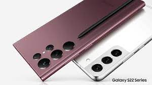

Samsung

Samsung Group,[3] or simply Samsung (Korean: 삼성; RR: samseong [samsʌŋ]) (stylized as SΛMSUNG), is a South Korean multinational manufacturing conglomerate headquartered in Samsung Town, Seoul, South Korea.[1] It comprises numerous affiliated businesses,[1] most of them united under the Samsung brand, and is the largest South Korean chaebol (business conglomerate). As of 2020, Samsung has the eighth highest global brand value.[4]
Samsung was founded by Lee Byung-chul in 1938 as a trading company. Over the next three decades, the group diversified into areas including food processing, textiles, insurance, securities, and retail. Samsung entered the electronics industry in the late 1960s and the construction and shipbuilding industries in the mid-1970s; these areas would drive its subsequent growth. Following Lee's death in 1987, Samsung was separated into five business groups – Samsung Group, Shinsegae Group, CJ Group and Hansol Group, and JoongAng Group.
Notable Samsung industrial affiliates include Samsung Electronics (the world's largest information technology company, consumer electronics maker and chipmaker measured by 2017 revenues),[5][6] Samsung Heavy Industries (the world's second largest shipbuilder measured by 2010 revenues),[7] and Samsung Engineering and Samsung C&T Corporation (respectively the world's 13th and 36th largest construction companies).[8] Other notable subsidiaries include Samsung Life Insurance (the world's 14th largest life insurance company),[9] Samsung Everland (operator of Everland Resort, the oldest theme park in South Korea)[10] and Cheil Worldwide (the world's 15th largest advertising agency, as measured by 2012 revenues)